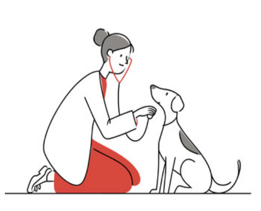
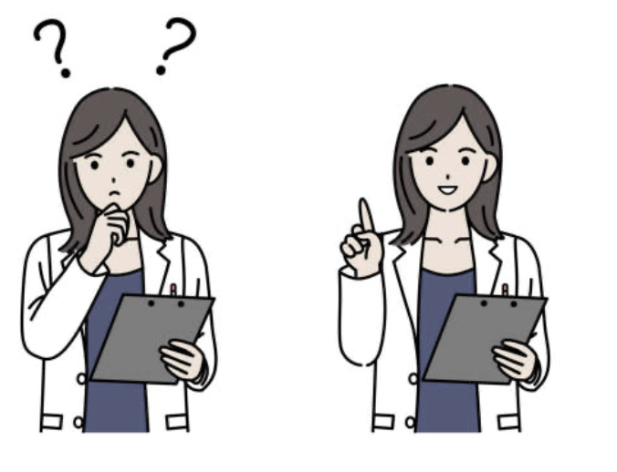

Ethics • Veterninary Sciences
Animal Euthanasia – is it ethical?
Animal euthanasia is the intentional termination of an animal’s life due to their suffering state. It is a controversial topic with the main factors including the psychology behind it , the welfare of the animal, and the ethics.
Euthanising an animal typically costs the practice around £90-£100 for small animals, while it could range to £200 and above for large dog breeds. Preparation and consent also occurs where the vet has to discuss the decision to the owner and the owner needs to sign a consent form.
After this, the procedure begins. The vet administers (applies) a sedative to relax the animal. This reduces the anxiety and ensures that the next injection would be less painful. Once the animal is in deep sleep, the vet shaves a small patch of fur usually on a front leg (cephalic vein) or a back leg (saphenous vein), to help them clearly see and feel the vessel. The area is then cleaned with antiseptic.
Then the vet puts pressure on the leg to make the vein swell up—this is called "raising the vein.” When the vet can clearly see where the blood veins and vessels are they inject a concentrated overdose of anaesthetic (usually pentobarbital) through a catheter (consists of a needle with a tube) directly into the vein. Once a flash of blood appears in the catheter tube- that is a signal the vein has been reached. The catheter is then used to ensure steady access to the bloodstream to insert the anaesthetics.
Once the needle in the catheter has inserted the anaesthetic, the vet then removes it so only the flexible plastic tube of the catheter remains in the animal’s vein and the needle is taken out. Once this is inserted and secured, the owner may cradle the animal as the medication circulates painlessly through their bloodstream and reaches their brain. This is the most efficient method to give the animal a painless death.
Different animal-owner bonds can influence the owner’s willingness to proceed with euthanasia. An example of this is a common case by which the relationship between a pet and an owner is very emotional- with the owner willing to go to extreme lengths to save their animal. This is contrasted by the typical relationship between a working animal and its owner which may have little emotional connection- with the owner possibly requiring the animal for economic gain. This can reduce the connection between the animal and the owner, making the owner consider euthanasia quickly if the animal is not meeting their expectations in some cases.
An example of this are race horses and their owners. If the race horse is injured or has developed a disease, the owner may proceed with the termination of the animal with haste as they are losing money generated from the animal. This is problematic because thousands of race horses are slaughtered and euthanised per year. PETA, an animal rights organisation, estimates that the U.S. Thoroughbred-racing industry sends an estimated 10,000 horses to slaughter annually, as they are deemed not profitable. Racehorses are often young, otherwise healthy animals euthanised due to injury, whereas pet euthanasia is often, due to severe illness.
An owner may be overly attached to their pet and unable to understand why euthanasia is necessary or refusing to understand. An owner with an animal with a severe but treatable illness may be reluctant to buy the necessary medication and may ask for euthanasia. These relationships can affect the decision to proceed with the euthanasia.

There is also an animal welfare aspect. The 5 Freedoms Act is the basis when assessing animal welfare, introduced in 1965 in the uk.
1. Freedom from hunger and thirst
2. Freedom from discomfort
3. Freedom from pain, injury and disease
4. Freedom to express normal behavior
5. Freedom from fear and distress
On one hand, some argue that the euthanasia of an animal in any case should be banned as the termination of a life is uncalled for. They believe the sanctity of life should be prioritised no matter the animal’s state. Killing an animal is more complex as the animal is voiceless so has no choice when euthanasia occurs- this opens the argument against involuntary killing. To draw on the 5 freedoms, euthanasia may cause the animal discomfort and pain (if the procedure is not done properly).
On the other hand, some argue that euthanasia should and is only used in necessary times where the animal is suffering. The animal would have a horrible quality of life if it survived, so by euthanising it you are freeing the animal from pain and discomfort that could occur in later life. So the animal has the right to die painlessly with dignity. The idea that it’s in the animal’s best interest- and compassion for their suffering drives this perspective.
Vets are faced with difficult decisions. What would you do?

A cat is terminally ill but the owner has had them for 20 years and is finding it very hard to part with their animal. 1 in 5 cats suffer from cancer and this cat does. But the owner does not want to consider euthansia. The owner has the money for the medication which would make the animal cope but the animal would still feel discomfort.
A- Convince the owner to proceed with euthanasia as it is in the best interest of the animal.
B- Explain to the owner the prices of the medication along with any hidden costs, while explaining to them that euthanasia is still an option.
C- Tell the owner that they need to part with their animal due to the 3rd freedom act, it is in the best interest of the animal, and as a vet you feel it’s your moral obligation.
A pug has developed aggression towards others while being silent around their owner. The pug has experienced severe malnutrition. The client does not want to pay because the one-time euthanasia cost is cheaper than the cost of monthly medication.
A- Contact an animal welfare organisation and refuse euthanasia
B- Tell the owner about the 5 freedoms and that the client needs to take proper care of the dog with medication and refuse euthanasia.
C- Keep a vlog of the animal’s health and report it, refuse euthanasia.
When delivering the news of euthanasia, the vet must be respectful of the owner’s choices which could be influenced by emotion and budget. Although you may have personal morals, it is important to respect the client’s choices to an appropriate extent.
In conclusion, euthanasia remains a debatable issue with two opposing sides. Euthanasia can be positive as it can improve the animal’s welfare, and offers relief from pain. Euthanasia can also be negative as it can be seen as ethically ‘wrong’ and can be a traumatic thing for the owner in cases of a close human-animal relationship. On the whole, I think that euthanasia is positive if used in the appropriate situations.